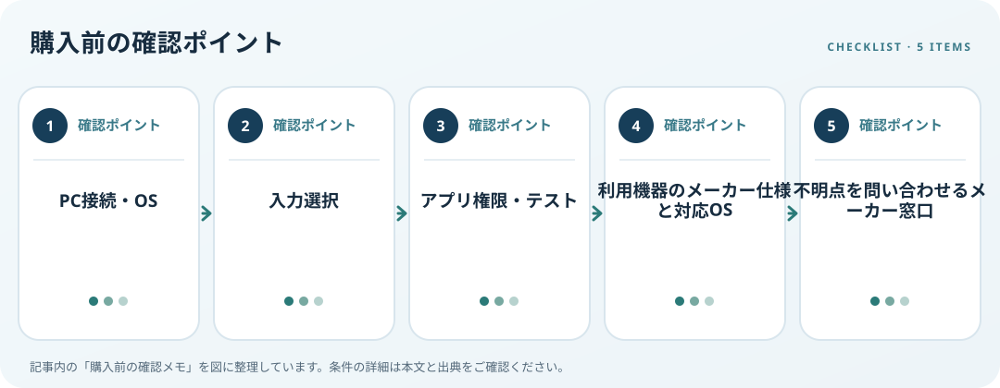

USBマイクはPCに接続できても会議アプリで使えるとは限りません。USB端子と対応OSに加え、Windowsの入力デバイス選択、アプリのマイク権限、ミュート操作を確認します。Microsoftは接続済みマイクを選んでテストする方法と、アプリごとのプライバシー設定を案内しています。

対応条件を仕様で確認
PCの空きUSB端子、付属ケーブル、必要な変換器を調べます。机上に置くかアームに付けるか、ケーブルの取り回しも考えます。メーカーが示す対応OS、必要なアプリやドライバー、USBハブ使用時の条件を機種別サポートで確認してください。
利用環境・設置条件を確認
会議、録音など用途を書き出し、アプリで入力デバイスを選べるか確認します。Windowsの「設定」から「システム」「サウンド」「入力」でマイクを選んでテストできます。音が入らなければ「プライバシーとセキュリティ」「マイク」のアクセス許可や、ブラウザーのサイト別許可も確認します。
購入前の確認メモ
- PC接続・OS
- 入力選択
- アプリ権限・テスト
- 利用機器のメーカー仕様と対応OS
- 不明点を問い合わせるメーカー窓口
記事は出典の公開情報を確認手順に整理したもので、製品の使用・実測・ランキング・価格・在庫の調査は行っていません。購入時には各メーカーの最新情報をご確認ください。
出典
- How to set up and test microphones in Windows — Microsoft Support（確認日: 2026-10-10）
- Windows camera, microphone, and privacy — Microsoft Support（確認日: 2026-10-10）